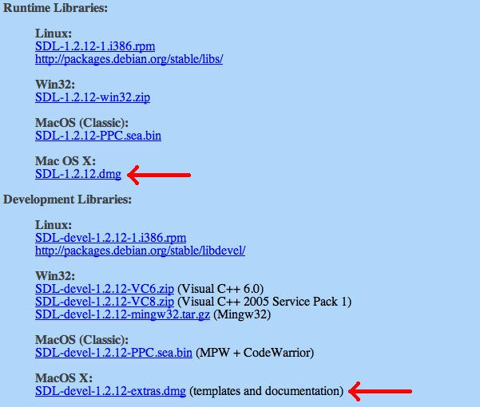
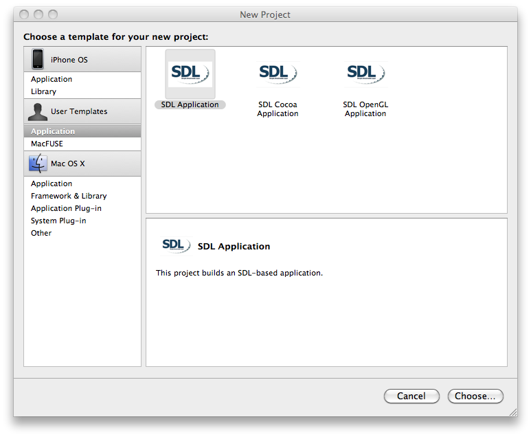
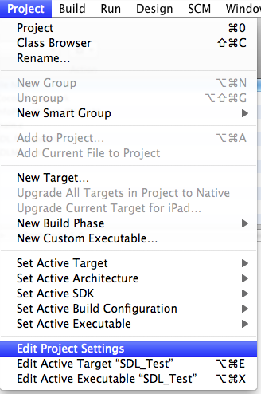
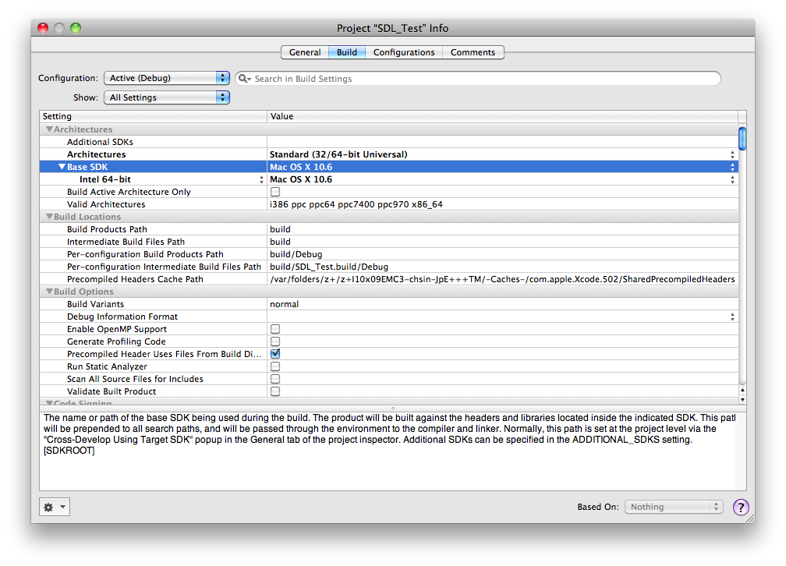

Setting up SDL for XCode
Last Updated 8/26/10
1)First thing you need to do is download the SDL library. It's available on the SDL website.
2)Open up the runtime package. Copy the SDL.framework folder to /Library/Frameworks.
2)Open up the developer package and go inside of the XcodeTemplates folder. Go inside of the TemplatesForXcodeSnowLeopard and copy the set of folder inside of it. Go to /Library/Application Support/Developer/Shared/Xcode/Project Templates/Application and paste the set of folders inside here. If the folder does not exist, create it.
3)Start up XCode and create a new XCode project. Select SDL Application, which should be under User Templates > Application.
4)Go to project settings:
5)Set your base SDK to the latest version of Mac OS X you have available:
6)Now build and run your project (which shows a blank window).
If it compiles you're done. Otherwise go back and make sure you didn't skip a step.

You'll need to download both the runtime and developers packages.
2)Open up the runtime package. Copy the SDL.framework folder to /Library/Frameworks.
2)Open up the developer package and go inside of the XcodeTemplates folder. Go inside of the TemplatesForXcodeSnowLeopard and copy the set of folder inside of it. Go to /Library/Application Support/Developer/Shared/Xcode/Project Templates/Application and paste the set of folders inside here. If the folder does not exist, create it.
3)Start up XCode and create a new XCode project. Select SDL Application, which should be under User Templates > Application.

4)Go to project settings:

5)Set your base SDK to the latest version of Mac OS X you have available:

6)Now build and run your project (which shows a blank window).
If it compiles you're done. Otherwise go back and make sure you didn't skip a step.